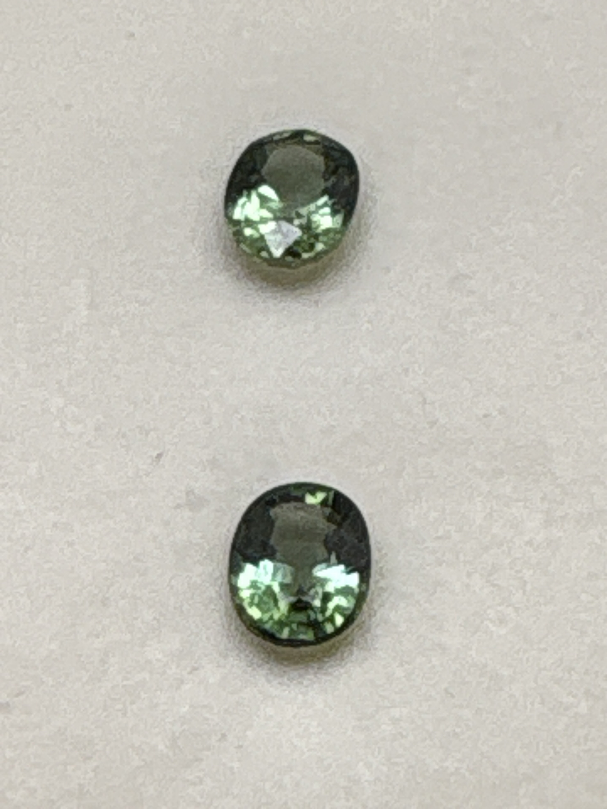

The Gem Drawer › No. 16

Two olive to yellowish-green oval tourmalines in one box.
| Catalogue no. | #16 |
|---|---|
| As labeled | Green Tourmaline (PAIR - 2 stones in this box, see notes) |
| Shape / cut | Oval (mixed cut) |
| Weight | 2 ct |
| Measurements | Not recorded |
| Colour | Medium-dark yellowish-green / olive green |
| Clarity / condition | Eye-visible inclusions present (see photos); not professionally graded |